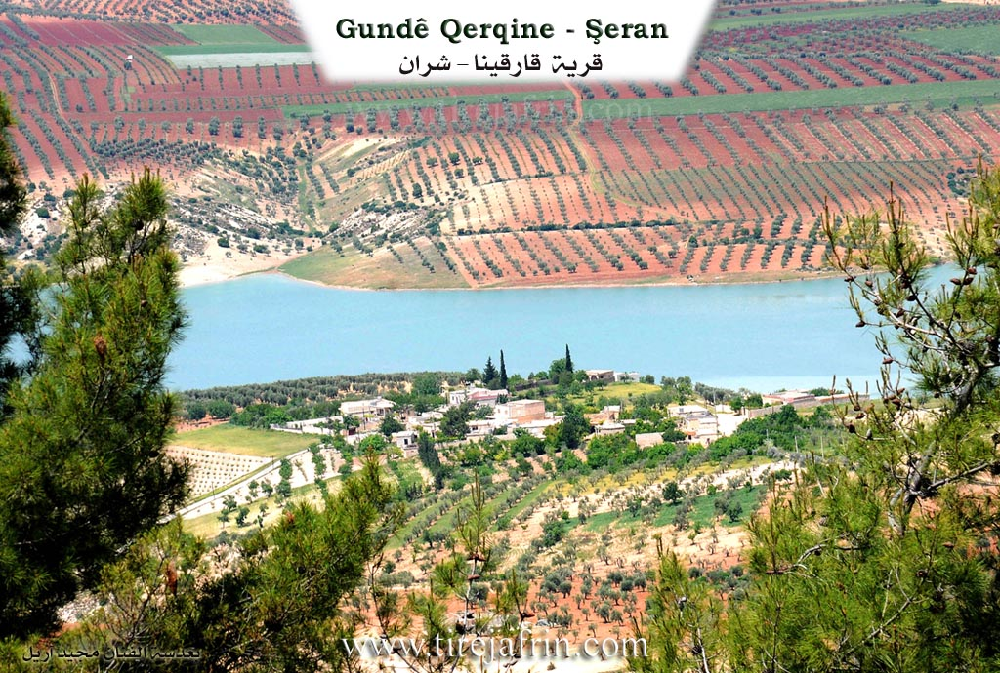
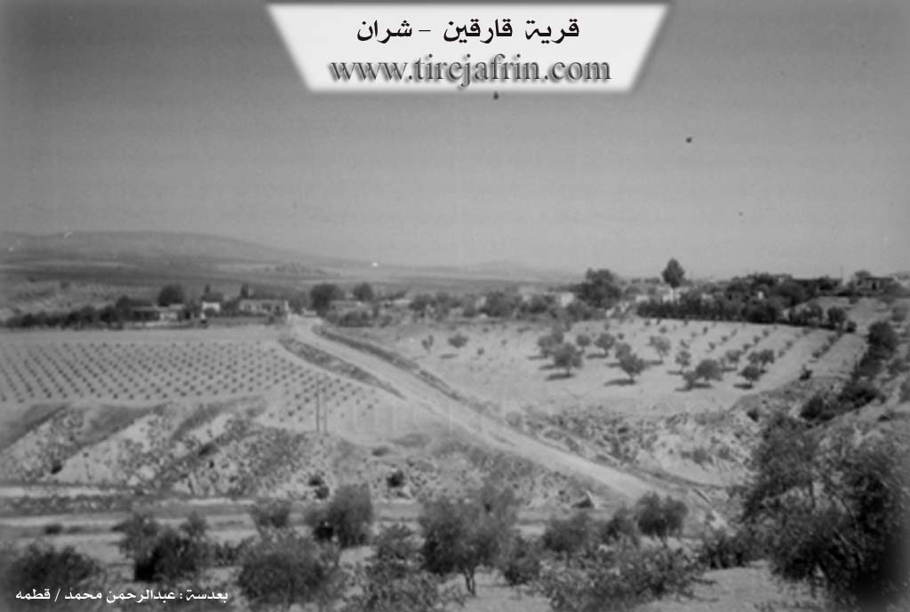

General Information
Nahiya (Subdistrict)
Şera
Also Known As
Al-Bastan Al-Kabir, Qetlebiye, Bustan al-Kabir, Buyuk Qarqin, Qarqin Large, Qarqîno, Qerqîna, البستان الكبير, بيوك قارقين, قارقين كبير, قرقينه
Tribes
Amikan, Amkan, Şikakan, Şîkan
Families, Clans, etc.
Al Bice, Almestû, Bavê Mihemed, Bavê mamoste Şe'ban, Bebekê, Bebekî, Botî, Bûtî, Derwêş, El Mestû, Elmerto, Elî Elmistû, Emê, Henan, Hesen Bico, Hisîk, Krîv, Mamû Şehîn, Memo Şahîn, Mistefa Ebû Reman, Qotîş, Qutiş, Qutişlera, Şahîn, Şêxo rehma bavê E'bdo
Photos


Basic Information about Qerqîna
Source: Ax û Welat
Number of Caves: 10
Springs: Kaniya Sîmanê
Hills: Çiyayê Qere Xalû, Çiyayê Kurbê
Ruins: Tîlx, Qetlemiyê
Other Landmarks: Geliyê Sîmanê, Geliyê Berava, Gola Meydankê
Source: Khalil Sino
Etymology: Qerqînê is derived from the presence of a spring (Ke'nî) flowing into the village, while its Arabic name Bustan al-Kebîr refers to the historic abundance of orchards; Be'ravê (or Ba'rava) signifies 'by the water' (ji avê va nîzîk e)
Springs: Ke'nî
Shrines: Tirbespiyê
Ruins: Delîbê
Trees: Kiçinar, gûza, mişmişa, henara
Other Landmarks: Cweyq, Bustan al-Kebîr
Summaries
I. Summary from TirejAfrin Site (English) of Qerqîna
Source: https://www.tirejafrin.com/site/kura%20afrin%20%20sheran%20-%20qarqen%20k.htm
According to the book جبل الكرد (عفرين) دراسة جغرافية Çiyayê Kurmênc (Efrîn): A Geographical Study: Qerqîna, Biyûk Qarqîn, El-Bustan El-Kebîr /390 inhabitants, 193 hectares, 8km distance, 380m elevation/:
Qerqîna: The name is Kurdish in origin, context, and pronunciation. I believe it is a verbal corruption of the name Xelqîn, which refers to household utensils. The Ottoman name Biyûk Qarqîn means "Big Qarqîn." The Arabized name is a modern official designation.
It is a medium sized village located 2km east of Çemê Efrînê, on the slope of a mountain plateau.
According to the book عفرين .... نهرها وروابيها الخضراء Efrîn... Her River and Her Green Hills: Qarqîn Kebîr: A village in Çiyayê Kurmênc following the township of Şeran, district of Efrîn, governorate of Heleb, (377 inhabitants). It is a very small village located at the bottom of the eastern slope of the northern section of the Çiyayê Kurmênc plateau, 1km west of Çemê Efrînê. It is 8km away from the town of Şeran towards the northwest. Its soil is clay alluvium.
It is bordered to the north by a valley, the course of Çemê Efrînê, a fertile plain, and the village of Alîcî; to the south by a slope and a mountain range planted with olive trees, and at the top of the height is the village of Cemanlî; to the east by a deep valley in which flows Kaniya Omeranlî, a mountain range, and the village of Omeranlî; and to the west by a deep valley, a highland, and the village of Elî Bazanlî which is close to it.
The number of its houses is 15 and its age is 250 years. Its old houses are made of stone and mud with wooden ceilings, while the modern ones are cement and stone. It has an electricity network, drinking water, and a school shared with the nearby village of Elî Bazanlî. The road connecting to the village has been recently paved.
Its residents work in the cultivation of olives and vegetables irrigated from Çemê Efrînê, such as apricots, pomegranates, and vegetables. The village drinks from a water network connected to a well dug south of the village of Naz Uşaxî.
Among the families present in the village: Elî Elmistû family and Al Bice family.
Village Mokhtar: Heysem Mihemed Şahîn
Sources of Information:
- Book: جبل الكرد (عفرين) دراسة جغرافية Çiyayê Kurmênc (Efrîn): A Geographical Study by د. محمد عبدو علي Dr. Mihemed Ebdo Elî.
- Book: عفرين .... نهرها وروابيها الخضراء Efrîn... Her River and Her Green Hills by عبدالرحمن محمد Ebdulrehman Mihemed from the village of Qetme.
- Studies of Navenda Tirej Soft / Ebdulrehman Hacî Osman.
- Some residents of the villages.
Preparation and execution: Manager of the Tirej Efrîn site: Ebdulrehman Hacî Osman 20/12/2013
II. Summary of Qerqîna from Ax û Welat
Source: https://www.youtube.com/watch?v=6NcGeWLgD9Y
The village of Qerqîna (also referred to as Qerqîna Mezin) is located in the Şera district of the Efrîn region. Situated approximately 6 kilometers north of Şera and 25 kilometers northeast of Efrîn city, the village lies along the banks of the Gola Meydankê (Meydanki Lake). While the name Qerqîna is identified as Kurdish, its specific etymological meaning is no longer known to the local inhabitants.
The history of Qerqîna is described as ancient, with evidence of human habitation dating back to eras when people lived in caves; approximately ten ancient caves remain in the vicinity today. The village shows signs of historical passage by various powers, including the Romî (Romans) and Osmanî (Ottomans). According to local oral tradition, the village was settled by two brothers: Henan, who established Qerqîna Mezin, and Derwîş, who settled in the adjacent smaller village known as Qerqîna Biçûk or Gundê Derwîş.
The social structure of Qerqîna is composed entirely of Kurds, primarily originating from two major tribes: the Şikakan and the Amikan. The village is home to several distinct families. The El Mestû family, belonging to the Amikan tribe, has nomadic (koçer) roots. The Botî family traces their origins to Cizîra Botan. Other notable families include Hesen Bico, Memo Şahîn, Qutiş, Emê, and Bebekê.
The residents of Qerqîna pride themselves on a history of resisting servitude. During the French Mandate period, local figures such as Mistefa Çolaq and Ebdo El Mestû are remembered for taking up arms and fighting against French forces. In contemporary times, the village honors several martyrs, including Şehîd Silava Aytan, Şehîd Xelîl, and Şehîd Aytan (also referred to as Şehîd Welat).
Geographically, the village is surrounded by significant natural features. To the east lies Geliyê Sîmanê (Sîman Valley) and the villages of Çema and Omara. To the south is Geliyê Berava and the lake. To the north rise the hills of Çiyayê Qere Xalû and Çiyayê Kurbê, near the abandoned ruins of Tîlx and Qetlemiyê. The construction of the dam creating Gola Meydankê in the late 20th century transformed the local economy; while it submerged many traditional orchards and gardens, it introduced fishing as a livelihood for some residents. However, olive cultivation remains the primary agricultural staple. The village has also organized communal projects, such as sourcing water from Kaniya Sîmanê.
II. Summary of Qerqîna from Ax û Welat 2
Source: https://www.youtube.com/watch?v=0w6ADVBBCgk
The village of Qerqîna, located in the Şera district of Efrîn, sits along the banks of the Meydankê reservoir. The settlement is historically divided into two sections founded by two brothers: Qerqîna Mezin (Big Qerqîna), settled by the brother Henan, and Qerqîna Biçûk (Little Qerqîna), also known as Derwêş or Dêrwîş, settled by the brother Derwêş. The region bears signs of ancient habitation, including approximately ten caves and historical remnants in the nearby Geliyê Sîmanê (Simeon Valley), indicating human presence dating back to Roman and Ottoman eras.
The social fabric of Qerqîna is woven from several Kurdish lineages. Residents belong primarily to the Şîkan and Amkan tribes. While the Elmerto (or Almestû) family descends from local Koçer (nomads) of the Amkan tribe, other prominent families such as Hisîk, Qotîş, Şahîn, and Bûtî trace their origins to Cizîra Botan. In the past, the village was also home to the Krîv family and the Bebekî, though some have moved to the city of Efrîn. The community has a history of resistance against foreign rule; notably, during the French Mandate, village elders refused servitude, and men like Mistefa Çolak and Evdê Almestû joined the armed struggle against the French forces.
Geographically, the village is flanked by the Qerexelo and Korbê mountains to the north and faces the Meydankê lake. The construction of the Bendava Meydankê (Meydankê Dam) in the 1980s significantly altered the local economy and landscape. Much of the village's fertile agricultural land, previously used for orchards and gardens, was submerged. While olives remain a staple crop, the village has adapted to the water, with residents now engaging in fishing, catching species like Bûrrî, Kerb, and Kersîn.
Culturally, Qerqîna maintains a reputation for communal solidarity. Elders recall a time when the entire village would share meals on large spreads under the trees, a tradition of unity that persists in their collective projects, such as piping drinking water from Kaniya Sîmanê. The village is also home to artistic talent, such as the painter Reşîd, who documents Kurdish folklore and daily life through his art. The area remains surrounded by historical ruins, including the deserted village of Qitlebiyê and the nearby Kela Sîman and Keleha Kurd, marking it as a place deeply embedded in the region's long history.
II. Summary of Qerqîna from Khalil Sino
Source: https://www.youtube.com/watch?v=l6VspYj64J0
The documentary focuses on two neighboring villages in the Efrîn region, specifically within the Şera district: Qerqînê (also known by the Arabic name Bustan al-Kebîr) and Be'ravê (also referred to as Ba'rava). The host visits these communities to record their current state, interview elders, and connect the local population with the diaspora scattered across Europe and nearby regions.
In Qerqînê, the history of the village is deeply tied to water and agriculture. An elder named Ehmed explains that the village name is connected to the Ke'nî (spring) that used to flow freely through the settlement. The Arabic designation, Bustan al-Kebîr (The Big Orchard), was given because the area was once densely populated with fruit trees, specifically gûza (walnuts), mişmişa (apricots), and henara (pomegranates). However, Ehmed notes that drought and environmental changes have dried up many trees, and the walnut trees were largely cut down. A notable surviving landmark is a massive Kiçinar (plane tree), which Ehmed estimates is over one hundred years old (ser sedî salî ra ye). Historically, the villagers also utilized the Cweyq river for fishing, though this practice has declined. Near Qerqînê, Ehmed mentions the kavil (ruins) of a former village called Delîbê, which was once inhabited but is now completely abandoned and destroyed.
The second village, Be'ravê, derives its name directly from its geography, meaning "by the water" (Ber avê). Here, the host interviews Bavê Mihemed (74 years old) and his wife Dykê Mihemed. They discuss the demographic shifts in the village; while there are approximately 90 houses (nod mal) in Be'ravê, only about 25 to 30 families currently reside there, as many have emigrated. The conversation highlights the strong connection to the diaspora, sending greetings to family members like Mistefa Ebû Reman, Rênas, Brahîm, and Narîn who are in Almanya (Germany), Şerîfe in Istanbul, and m'Cemal in Qoser.
Culturally, Be'ravê is noted for its traditional food production. Dykê Mihemed describes making leçer (jams and preserves) from roses, figs, and apricots, as well as bastiq (fruit leather). The social structure revolves around close knit families, such as the house of Bavê Mihemed and the family of Bavê mamoste Şe'ban, whose son Şe'ban has not been seen for twelve years. The documentary also includes a visit to a sacred site or cemetery referred to as Tirbespiyê, where the host pays respects to the ancestors of the villagers. Another interviewee, Zekiyê (74 years old) from the village of Dêrwîş, reminisces about traditional weddings that lasted several days on the bêder (threshing floors), contrasting the communal joy of the past with the hardships of the present.
Transcriptions and Subtitles
| Source | Video | Subtitles | Transcript |
|---|---|---|---|
| Ax û Welat 1 | Watch Video | Download SRT | View Transcript |
| Ax û Welat 2 | Watch Video | Download SRT | View Transcript |
| Khalil Sino 1 | Watch Video | Download SRT | View Transcript |
Foundation/Origin Information of Qerqîna
Families present in the village include Al Ali Almastu and Al Bajah.
Source: TirejAfrin Site
Possible Village Name Meaning of Qerqîna
Qarqina is Kurdish in origin, possibly a corruption of 'Khalqin' (a household utensil). The Ottoman name 'Buyuk Qarqin' means 'Large Qarqin'. The Arabic name is a modern designation.
Source: TirejAfrin Site
The name Qarqîno originates from the Kurdish word 'qehnî' (spring). Its Arabic name, Bustan al-Kabir, was given due to its abundance of orchards. Ba'rava derives its name from 'ber avê' (by the water).
Source: Halil Sino Transcript